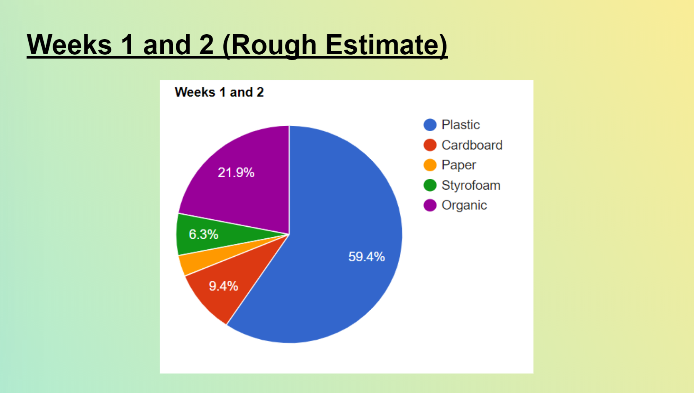
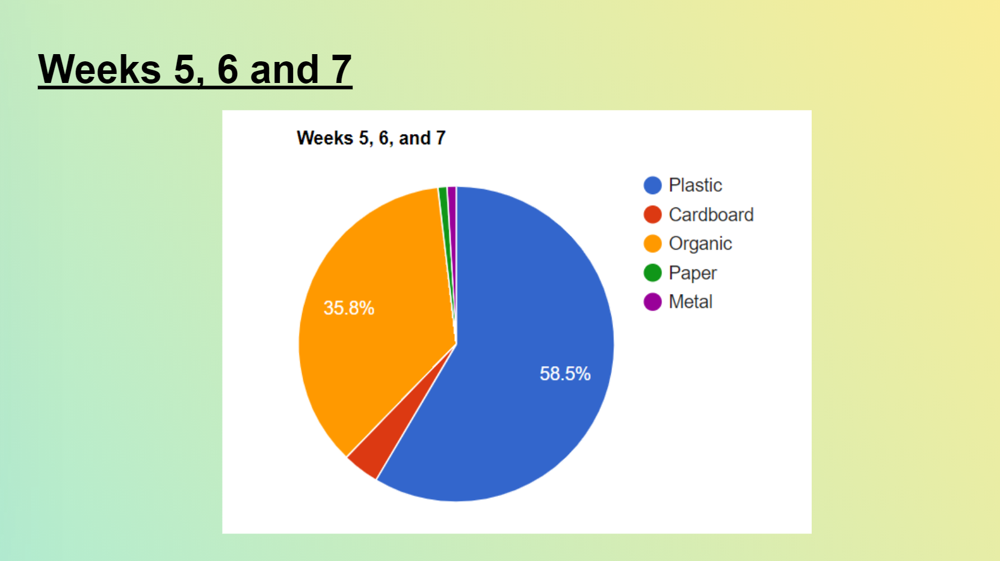

Beyond Trash Consumption: Reuse, Reimagine, and Responsibility
JOYCE LEUNG
For the past several months, the simple act of throwing things away have felt strange and unfamiliar to me. Standing before the garbage or recycling bins, I asked myself: what is it that I'm throwing away, and how can I possibly reuse them in novel ways? These two questions became the starting basis of my project.
Spanning through the months of September to December, I recorded the types and quantities of the trash that I produced everyday in a "trash journal" — whether they are paper, plastic, cardboard, organic food wastes, or other types of trash materials. Aside from the trash journal, I built a diorama model to visualize the particular types of trash that I've accumulated, and to make creative use of them. More than the DIY model itself, the project is also a documentation of my trash-producing habits. Learning about the different origins and labels of the waste materials allowed me to realize that before they're considered as trash, they are still items that fundamentally have their own unique values and purpose. Getting to know more about the materials themselves is not only a reminder for us to not take things for granted, a challenge to reevaluate our perspectives towards our waste consumption patterns, and more importantly, this form of awareness can often be the first step in enabling us to contribute to environmental sustainability.
DIY Trash Diorama

Analysis: Types of Trash Over the Weeks

Some Final Thoughts
Similar to the fast fashion example that I mentioned in the previous slides, making a personal commitment to upholding sustainability in our personal daily lives can feel and be like a difficult marathon. However, I believe that one of the first steps to making this change can be through changing my perspective of what “waste” truly means in my daily life.
By making a conscious decision to break out of my comfort zone and changing my existing habit of just throwing out wastes without second thought, this can not only enable me to redefine what “trash” or “waste” is, but I can also continue to create a positive impact and contribution in my surrounding environment in the long term, starting with one small change in my trash-producing habit or behavior at a time.